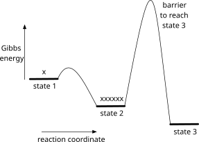
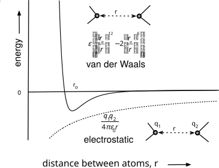
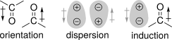
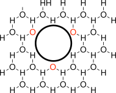
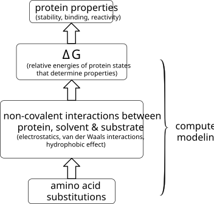
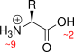
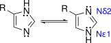
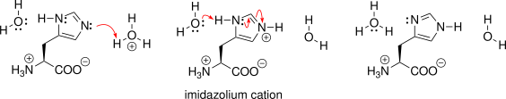

3 The Logic of Protein Engineering
© 2023-2026 Romas Kazlauskas. All rights reserved. Last revised: March 2026.
Summary. Gibbs energy diagrams are the conceptual tool that connects the goals of protein engineering to the changes in amino acid sequence. Gibbs energy diagrams show the states available to a protein, the relative energies of these states and barriers between them. Protein states (macrostates) are different protein forms, for example, folded and unfolded protein states. Protein states differ in their flexibility and in their non-covalent interactions within the protein and between protein, solvent and any ligands. These differences in molecular interactions in different protein states create Gibbs energy differences between them. The Gibbs energy differences between protein states determine the properties of proteins, including those usually targeted for protein engineering: stability, binding, reactivity and selectivity. Protein engineering works by selecting amino acid replacements that alter the relative Gibbs energy of protein states.
Key learning goals
- Gibbs energy diagrams show the options available to a protein including the available states, their relative energies and the barriers between the states.
- Protein states (macrostates) are protein forms that have macroscopic or bulk properties that one can measure. For example, the folded and unfolded protein states differ in their fluorescence properties.
- Protein states consist of countless numbers of microstates, which are individual conformations.
- Protein states differ in Gibbs energy due to differences in non-covalent interactions (electrostatic and van der Waals) and in entropy. Amino acids substitutions alter these interactions.
- The Gibbs energy difference between various states determine a protein’s properties. The Gibbs energy difference between folded and unfolded protein, \(\Delta G_{unfold}\), determines protein stability. The Gibbs energy difference between bound protein and target and free protein and target, \(\Delta G_{diss}\), determine binding strength. The Gibbs energy difference between the substrate state and the transition state for the reaction, \(\Delta G^{\ddagger}\), determine the reaction rate.
- Replacing amino acid residues in a protein changes the relative energies of the states and therefore the properties of the protein. This change in Gibbs energy of the protein states is the basis of protein engineering.
3.1 Gibbs energy diagrams
Protein states. Proteins exist in different forms called macrostates or more commonly states. Protein states differ in their non-covalent interactions and flexibility, but not in their covalent structure. For example, the folded state of an enzyme is the native, catalytically active form and the unfolded state is the denatured, catalytically inactive form. States refer to protein forms that have macroscopic or bulk properties that one can measure. For example, the folded and unfolded states of a protein have different fluorescence properties and migrate differently in a gel electrophoresis experiment.
Protein states can interconvert with each other. For example, a solution may contain interconverting folded and unfolded states, Equation 3.1. The relative amounts of each state corresponds to the equilibrium constant for the interconversion. This balance between the folded and unfolded states determines protein stability.
\[ folded \xrightleftharpoons{K_{unfold}} unfolded \quad K_{unfold} = \frac{[unfolded]}{[folded]} \tag{3.1}\]
Gibbs energy diagrams. Gibbs energy diagrams show the options available to a protein. The diagram shows the available states, their relative energies and the barriers between the states, Figure 3.1. The relative Gibbs energies of the states determine the relative amounts of protein in each state; in other words, the relative Gibbs energies determine the equilibrium constant between the two states, Equation 5.1. The difference in Gibbs energy, \(\Delta G\), between two states is proportional to the natural logarithm of the equilibrium constant between the two states. The constant \(R\) is the gas constant, which corresponds to 1.987 cal/mol·K when \(\Delta G\) has the units of calories and to 8.314 J/mol·K when \(\Delta G\) has the units of joules. The constant \(R\) connects the temperature scale to the units of energy used in physics (calories or joules). \(R\) is a molar quantity suitable for chemistry calculations, while Boltzmann’s constant is used when working with particles. \(T\) represents the temperature in degrees Kelvin.
\[ \Delta G = -RT \ln K_{eq} \tag{3.2}\]

If the reaction is favorable, then the equilibrium constant is >1, the natural logarithm of the equilibrium constant is positive, and the Gibbs energy change is negative. For example, in Figure 3.1, state 1 could represent the denatured state and state 2 could represent the native state. The native state is more stable, so most of the protein exists in that form. The equilbrium constant for unfolding is unfavorable (<1) and the Gibbs energy change for unfolding is positive. At room temperature (298 K) an equilibrium constant of 10 corresponds to a 1.36 kcal/mol Gibbs energy difference. An equilibrium constant of 100 corresponds to 2.73 kcal/mol, which is an additional 1.36 kcal/mol. Each additional factor of 10 in the equilibrium constant corresponds to an additional 1.36 kcal/mol of Gibbs energy difference.
The barriers between protein states indicate how fast the proteins interconvert between the states. The barrier between states 1 and 2 is small, so those two states interconvert readily on the time scale of the experiment. The barrier to reach state 3 is high so that state, although lower in energy, is not populated because there has not been enough time for the proteins to equilibrate. Since protein states differ in their conformation and many conformational changes are fast, many barriers between states are low. When the conformational change requires collective movements of many atoms it can be slow. For example, large scale movement of a loop to open an active site can be slow because it requires two hinge movements and release of existing interactions between amino acids. State 3 could represent a very slow-to-form protein conformation such as one with several knots.
Chemical reactions, such as the conversion of a substrate to product, are also described by Gibbs energy diagrams. The relative Gibbs energies of the substrate and product correspond to the equilibrium constant between them. Enzymes cannot change this equilibrium; it depends only on the properties of substrate and product. The height of the barrier corresponds to rate at which they reach this equilibrium. Enzymes can change this rate by stabilizing the transition state for the reaction. This text will use Gibbs energy diagrams for both protein states, where only conformational changes occur and for chemical reactions where covalent bonds are broken and formed. For most chemical reactions, this text will use the standard Gibbs energy, indicated by the superscript °. This standard free energy refers to the standard state of 1 M concentration for both [S] and [P] and is used for simplicity. In reality, the Gibbs energies differ as the concentrations of [S] and [P] change. At the beginning of a reaction (high [S], low [P]) the Gibbs energy of the product is lower than the Gibbs energy of the substrate. As the reaction proceeds, the concentrations of substrate and product change, the Gibbs energy levels change such that at equilibrium (low [S], high [P]) the Gibbs energy levels are equal.
3.2 The relative Gibbs energies of states determine protein properties
Proteins properties depend on the relative energies of different protein or chemical states, Figure 3.2. Protein stability depends on the difference between the native state and denatured state, Equation 3.1 above. The denatured state is less stable (\(\Delta G_{unfold}\) is positive) so most of the protein exists in the native state.
![Three Gibbs energy diagrams (a, b, c). a) Native and unfolded protein states separated by a barrier ΔG_unfold; stabilizing the native state or destabilizing the unfolded state increases this gap (more stable protein). b) Bound and free states with gap ΔG_diss; stabilizing the bound state increases dissociation energy (tighter binding). c) Starting materials, a high-energy transition state, and product, with barrier ΔG_kcat/KM; stabilizing the transition state lowers this barrier (faster reaction).](figures/chapter3/delG_properties.svg)
The binding strength of an antibody, Ab, for an antigen, Ag, depends on the energy difference between that bound and unbound states, Equation 3.3. A positive \(\Delta G_{diss}\) corresponds to unfavorable dissociation, thus favorable binding, which means the Gibbs energy of free Ag + Ab is higher than the Gibbs energy of Ag·Ab.
\[ \text{Ag}\cdot \text{Ab} \xrightleftharpoons{\Delta G_{diss}} \text{Ag} + \text{Ab} \quad \Delta G_{diss} = G_{\text{Ag} + \text{Ab}} - G_{\text{Ag}\cdot \text{Ab}} \tag{3.3}\]
Enzyme catalysis involve a chemical reaction, Equation 3.4, which has a certain \(\Delta G_{rxn}\) that reflects the energy difference between starting material and product. Enzymes cannot change this \(\Delta G_{rxn}\); it is determined by the starting material and product. Enzymes only speed up the approach to equilibrium.
\[ starting\ material \xrightleftharpoons{K_{eq,rxn}} product \quad \Delta G_{rxn} = \frac{[product]}{[starting\ material]} \tag{3.4}\]
Transition state theory proposes that the rate of a chemical reaction depends on the energy difference between starting materials and the transition state, \(\Delta G^{\ddagger}\), Equation 3.5. The transition state lies at higher energy than the starting material, so \(\Delta G^{\ddagger}\) is positive. This equilibrium is a pseudo-equilibrium because some of the transition state species are continuing on to product.
\[\begin{aligned} starting\ & material \xrightleftharpoons{K_{eq,ts}} transition\ state \\ & \Delta G_{uncatalyzed}^{\ddagger} = \frac{[transition\ state]}{[starting\ material]} \end{aligned} \tag{3.5}\]
Enzymes catalyze reactions by stabilizing the transition state. Enzymes bind the transition state and stabilize the conformation and charge distribution needed for the bond-breaking and bond-making, Equation 3.6. This stabilization lowers the barrier between starting material and product so the reaction proceeds faster. The two states that determine enzyme catalysis are the \(starting\ material + enzyme\) state and the \(transition\ state \cdot enzyme\) state.
\[\begin{aligned} starting\ material\ +\ & enzyme \xrightleftharpoons{K_{eq,ts,cat}} transition\ state \cdot enzyme\\ & \Delta G_{catalyzed}^{\ddagger} = \frac{[transition\ state \cdot enzyme]}{[starting\ material][enzyme]} \end{aligned} \tag{3.6}\]
3.3 Protein engineering manipulates the Gibbs energies of states
Improving protein properties requires changing the relative Gibbs energies of different protein states, Table 3.1. Increasing the value of \(\Delta G_{unfold}\) stabilizes proteins, increasing the value of \(\Delta G_{diss}\) strengthens binding, and decreasing \(\Delta G_{k_{cat}/K_M}\) speeds up catalysis. Changing the relative Gibbs energies is called differential stabilization. The structural changes introduced by protein engineering must stabilize some states more than others so that the difference between them changes, which results in a change in the protein properties.
| Protein Function | Gibbs Energy Change | Comparison States | Engineering Approaches for Improvement | |
|---|---|---|---|---|
| stability | \(\Delta G_{unfold}\) | folded protein vs. unfolded ensemble | increase \(\Delta G_{unfold}\) by stabilizing folded | protein or destabilizing unfolded ensemble | |
| binding | \(\Delta G_{diss}\) | protein bound to ligand vs. solvated protein & ligand | increase \(\Delta G_{diss}\) by stabilizing the bound | complex | |
| catalysis | \(\Delta G_{k_{cat}/ K_M}\) | enzyme and starting materials vs. transition state | decrease \(\Delta G_{k_{cat}/K_M}\) by stabilizing | the transition state | |
For example, altering the relative Gibbs energies of the two states involved in binding, the unbound state (free Ag + Ab) and the bound state (Ag\(\cdot\)Ab), alters binding strength, Equation 3.3 above. To create a differential stabilization, the substitution must alter the Gibbs energies of the two states by different amounts. The substitution of an alanine residue with phenylalanine in the antigen-binding region of the antibody might strengthen binding if the antigen interacts with the added phenyl group. Thus, the bound state would be stabilized. In the free antibody, exposing an additional hydrophobic phenyl group to water is unfavorable, thus the free state would be destabilized. The net result is a larger Gibbs energy of dissociation, which corresponds to stronger binding, Equation 3.7 and Equation 3.8.
\[ \text{Ag}\cdot \text{Ab}_{Ala} \rightleftharpoons \text{Ag} + \text{Ab}_{Ala} \quad \Delta G_{diss,Ala} = \text{original} \tag{3.7}\]
\[ \text{Ag}\cdot \text{Ab}_{Phe} \rightleftharpoons \text{Ag} + \text{Ab}_{Phe} \quad \Delta G_{diss,Phe} = \text{larger than original} \tag{3.8}\]
In contrast, the substitution of an alanine residue with phenylalanine in the core of the antibody, remote from the antigen-binding site, would alter both states similarly so the difference in Gibbs energy for Equation 3.3 would remain the same. The binding strength would not improve.
The improvement factor of a protein engineering experiment is the factor by which the stability, binding, reaction rate or selectivity has improved. This improvement corresponds to a ratio of equilibrium constants or rate contants for the property being improved. The value for the variant protein is divided by the value for the original protein, Equation 3.9.
\[ \text{improvement factor} = \frac{\text{variant } K_{eq} \text{or rate constant}}{\text{original } K_{eq} \text{or rate constant}} \tag{3.9}\]
The improvement factor should be >1 if the protein has improved. If the improvement factor is less than one when it seems that it should be >1, consider whether the equilibrium or rate constants being compared should increase or decrease to improve the protein. For example, protein stability depends on the unfolding equilibrium constant. An increase in the unfolding equilibrium constant corresponds to more unfolding and decreased stability. An increase in the unfolding equilibrium constant is not an improvement, but a degradation of stability. The equilibrium constant that should be compared to identify improvement is the inverse, or \(1/K_{unfold}\). The ratio of \(1/K_{unfold}\) for the variant divided by that for the orginal corresponds to the improvement factor, Equation 3.10. If the variant unfolds less readily, then \(1/K_{unfold}\) for the variant will be larger and the improvement will be >1.
\[ \text{stability improvement factor} = \frac{1/K_{unfold, \ variant}}{1/K_{unfold, \ original}} \tag{3.10}\]
One can also assign a Gibbs energy to the improvement. Protein properties in Figure 3.2 correspond to Gibbs energy difference between two states, a \(\Delta G\). The Gibbs energy for an improvement contains two \(\Delta\)’s because it is the difference between \(\Delta G\) for the variant and the \(\Delta G\) for the original, Equation 3.11.
\[ \Delta \Delta G_{improvement} = \Delta G_{variant} - \Delta G_{original} \tag{3.11}\]
An improvement can be a positive or a negative \(\Delta \Delta G\) depending on how the property is defined. An increase in protein stability corresponds to a positive value for \(\Delta \Delta G_{unfold}\), Equation 3.12, because making unfolding less favorable corresponds to a more stable protein.
\[ \Delta \Delta G_{unfold} = \text{larger than original} - \text{original} = \text{positive value} \tag{3.12}\]
An increase in antibody binding affinity corresponds to a positive value for \(\Delta \Delta G_{diss}\), Equation 3.13, because making dissociation less favorable corresponds to tighter binding.
\[ \Delta \Delta G_{diss} = \text{larger than original} - \text{original} = \text{positive value} \tag{3.13}\]
In contrast, an increase in reaction rate corresponds to a negative value for\(\Delta \Delta G^{\ddagger}\), Equation 3.14, because lowering the energy of the transition state speeds up the reaction.
\[ \Delta \Delta G^{\ddagger} = \text{smaller than original} - \text{original} = \text{negative value} \tag{3.14}\]
Selectivity is another protein property that is often a target for protein engineering. Selectivity refers to selective binding or selective catalysis. Binding selectivity compares the binding of a protein to two targets, so it is the difference in Gibbs energies for binding of the two targets, Equation 3.15.
\[\begin{aligned} \text{binding selectivity} & = \Delta G_{diss,target\ 1} - \Delta G_{diss,target\ 2} \\ & = \Delta \Delta G_{diss,target\ 1\ vs.\ target\ 2} \end{aligned} \tag{3.15}\]
There are two \(\Delta\)’s in the Gibbs energy for binding selectivity. Similarly, selectivity for reaction compares the reactivity of two substrates or the formation of two different products from an enzyme. Since the selectivity of binding or reaction compare two reactions, it already contains two \(\Delta\)’s: \(\Delta \Delta G\). The Gibbs energy change for the improvement in selectivity will have three \(\Delta\)’s: \(\Delta \Delta G\), Equation 3.16.
\[\begin{aligned} & \text{improvement in binding selectivity} \\ & = \Delta \Delta G_{diss,\ variant,\ target\ 1\ vs.\ target\ 2} - \Delta \Delta G_{diss,\ original,\ target\ 1\ vs.\ target\ 2} \\ & = \Delta \Delta \Delta G_{diss,\ original\rightarrow variant,\ target\ 1\ vs.\ target\ 2} \end{aligned} \tag{3.16}\]
One can write a similar equation for reaction selectivity.
In Chapter 1 we learned to define protein engineering goal in terms of protein properties. Now we learned that relative Gibbs energies of specific protein states must change to improve these protein properties. The next sections describes the non-covalent interactions and entropy contributions that we can modify to engineer changes in these Gibbs energies.
3.4 Non-covalent interactions & entropy
To engineer changes in the Gibbs energies, one needs to alter the molecular features that contribute to differences in the Gibbs energies of different protein states. The two contributors to differences in Gibbs energy are enthalpy, \(\Delta H\), and entropy, \(\Delta S\), Equation 3.17.
\[ \Delta G = \Delta H – T\Delta S \tag{3.17}\]
Protein states differ not in their covalent bonds, but in their conformations and associations with solvent and other molecules. These non-covalent interactions differ between states so manipulating these interactions can change the properties of a protein. For protein states, the enthalpic contributions come from favorable or unfavorable non-covalent interactions within a protein, between protein and solvent and between protein and target molecules. Stabilizing non-covalent interactions lowers the Gibbs energies of the corresponding states, while destabilizing interactions raise these energies. The entropic contributions come from differences in molecular flexibility and solvent interactions between the states. Entropy is the degree of disorder in a system so states with higher disorder are more favorable and have lower Gibbs energy.
Non-covalent interactions. The two fundamental non-covalent interactions are electrostatic interactions and van der Waals interactions. Charged or partially charged atoms attract or repel each other. Interactions between oppositely charged atoms are attractive (negative energies), while interactions between like-charged atoms are repulsive (positive energies). These energies vary inversely with the distance between them, r, according to Coulomb’s law, Equation 3.18, where \(q_1\) and \(q_2\) are the charges on the atoms and \(\epsilon_0\) is the dielectric constant of the medium separating them.
\[ \text{electrostatic energy contribution} = \frac{q_1 \cdot q_2}{4\pi \cdot \epsilon_0 \cdot r} \tag{3.18}\]
Since the energy varies inversely with \(r\), they persist over long distances, Figure 3.3. Hydrogen bonds are a special type of electrostatic interaction that includes contributions from covalent bonding.

All atoms interact via van der Waals interactions. The interaction is zero at long distances, attractive at intermediate distances and repulsive at short distances. The Lennard-Jones potential, Equation 3.19, describes the energetics of van der Waals interactions where \(r\) is the distance between the atoms and \(r_o\) is the distance where their interaction energy is lowest (optimal distance or van der Waals distance). Here the constant, \(\epsilon\), is not the dielectric constant, but the maximum interaction energy (depth of the attractive well). When \(r_o = r\), the van der Waals energy is \(-\epsilon\). Different values of \(\epsilon\) and \(r_o\) account for different interactions between different pairs of atoms. The \(12^\text{th}\)- and \(6^\text{th}\)-power inverse dependence on \(r\) indicates that both favorable and unfavorable interactions act only at short distances. Molecular modeling programs typically include van der Waals interactions between atoms separated by less than 10 Å. This approach saves computing interactions that are zero or very close to zero.
\[ \text{van der Waals energy contribution} = \epsilon \left[ \left( \frac{r_o}{r} \right)^{12} - 2 \left( \frac{r_o}{r} \right)^{6} \right] \tag{3.19}\]
The physical basis for the repulsion of neutral atoms at short distances is the Pauli exclusion principle. This principle states that electrons cannot have the same quantum numbers. This principle prevents atoms from collapsing since outer electrons of an atom cannot move closer to the nucleus into shells already occupied by other electrons. One can imagine this interaction as atoms bumping into one another.
The physical basis of the attractive interaction can be orientation, dispersion or induction depending on whether the molecules are non-polar or polar, Figure 3.4. If the atoms are in a polar bond, then they create a permanent dipole. Orientations between the bonds that cancel the dipoles create an attractive interaction, while orientations that reinforce the dipoles create repulsive interactions. If the atoms are non-polar (lack a permanent dipole), then fluctuation of their electron clouds creates instantaneous, temporary dipoles. Favorable alignment of these dipoles creates a weak net attraction, called London dispersion. For large, non-polar atoms, this attraction between instantaneous, temporary dipoles is the main origin of van der Waals attraction. The final possibility for van der Waals forces is between a non-polar atom and a polar bond. The permanent dipole in the polar bond induces a dipole in the non-polar atom, which creates an attractive interaction, sometimes called a Debye force.

Atoms approach each other until attractive interactions between them (electrostatic and van der Waals attractions) balance the repulsive interactions between them (electrostatic repulsion and bumping).
Non-covalent interations in water. Moving from vacuum to water changes the interaction between atoms in two ways. First, the net strength of the interactions between atoms decreases because in water the atoms always interact with something - water or each other - instead of nothing or each other in vacuum. Second, the hydrophobic effect strengthens the association between non-polar atoms to minimize the unfavorable association of water with non-polar atoms.
The equations above describe interactions between atoms in vacuum where the atoms have a choice between interacting with nothing (vacuum) or another atom. In water, the choice changes. Atoms interact with either water or other atoms; interacting with nothing is no longer an option. For polar and charged atoms electrostatic interactions, including hydrogen bonds, are weaker in water than they would be in vacuum, Table 3.2, because the atoms also make favorable electrostatic interactions and hydrogen bonds to water when they are not interacting with each other. For example, hydrogen bonds between solutes in water are only 0-2 kcal/mol, not the 3-5 kcal/mol in vacuum. Hydrogen bonds in water are simply traded to different partners, Equation 3.20, so the advantage is any net gain in the new set of hydrogen bonds. Two solutes start with hydrogen bonds to water. If the solutes trade those hydrogen bonds for hydrogen bond to each other, they break the solute-water hydrogen bond and create water-water hydrogen bonds from the released water and solute-solute hydrogen bonds. The net gain depends on the relative strength of all these changing hydrogen bonds.
\[ D\text{---}H(water) + A(water) \rightleftharpoons water\text{---}water + D\text{---}H \cdots A \tag{3.20}\]
Here \(A\) is the hydrogen bond acceptor atom and \(D\text{---}H\) is the hydrogen bond donor. In a similar manner van der Waals interactions are weaker in water than in vacuum because van der Waals interactions between water and solutes offsets the advantage of van der Waals interactions between solutes.
| Interaction | Type of Atom | Origin | Strength in Vacuum | Strength in Water |
|---|---|---|---|---|
| electrostatic interactions | charged & partially charged atoms | attraction between opposite charges, repulsion between like charges | 3-7 kcal/mol | 1-5 kcal/mol |
| hydrogen bonds | H + O, N, halogen | sharing a hydrogen atom between two electronegative atoms, an electrostatic interaction with a covalent contribution | 3-5 kcal/mol | 0-2 kcal/mol |
| van der Waals repulsion (bumping) | all | unfavorable bumping between atoms | 0-large | 0-large |
| van der Waals attraction | non-polar, polar bonds | orientation, dispersion, induction | ≈1 kcal/mol for Me-Me | ≤1 kcal/mol for Me-Me |
| hydrophobic effect | non-polar, only occurs in water | burying of hydrophobic surfaces minimizes unfavorable water orientations & creates van der Waals attraction | 0 | ≈2 kcal/mol for Me-Me |
a Estimates from Lodish, H. F., Berk, A., Zipursky, S. L., Matsudaira, P., Baltimore, D., & Darnell, J. (2000). Molecular cell biology (4th ed). W.H. Freeman. Section 2.2
The unique structure of water creates the hydrophobic effect, which is the tendency of non-polar solutes to cluster in water. The hydrophobic effect is not a bond or interaction between non-polar atoms; instead, it is a consequence of the behavior of water in the presence of a hydrophobic solute. The quote below describes the dynamic structure of water.
Water isn’t unique in forming hydrogen bonds, but it is the only common substance that can be joined by these gentle, frangible molecular handclasps into a three-dimensional network. Most liquids are little more than a disorderly scrum of jostling molecules. But water is delicately poised between order and disorder, constantly adopting a defective version of the framework structure that, in ice, immobilizes the water molecules into crystalline regularity. - Philip Ball[1]
Adding a hydrophobic solute disrupts this dynamic structure of water. The balance between order and disorder tips toward an ordered structure surrounding the hydrophobic solute. Water molecules at the non-polar surface cannot form hydrogen bonds with the non-polar surface, so they make fewer total hydrogen bonds, Figure 3.5. These hydrogen bonds are stronger than those in bulk water, immobilizing the water molecules at the surface of a non-polar solute into an ice-like cage structure. The restricted mobility of the water molecules in this cage decreases their entropy, making this arrangement less stable than bulk water. Clustering of non-polar solutes reduces the contact area between water and non-polar surface, releases water molecules from the cage-like structure and lowers their energy. The clustering of hydrophobic solutes occurs not due to an attractions between the non-polar atoms, but because of the change in water structure when they cluster. Weak van der Waals interactions between the non-polar atoms contribute a small amount to the hydrophobic effect, but the main origin is the behavior of the water molecules. The spontaneous separation of oil and water in a mixture is a macroscopic demonstration of the hydrophobic effect.

Entropy. Besides the non-covalent interactions between atoms, entropy also contributes to the Gibbs energy of the different protein states. Entropy is the degree of disorder in a system. For molecules, entropy is related to the number of microstates that the molecule can adopt. Assuming equal probability for each microstates, the entropy of a molecular state is proportional to the natural logarithm of the number of microstates within that state, Equation 3.21.
\[ S = R\ln(\text{\# of microstates}) \tag{3.21}\]
A typical example of microstates is different conformations along a single bond, such as the three different conformations of the side chain of serine. Another typical case is two enantiomeric possibilities, such as the gauche+ and gauche– conformations of butane.
The microstate of a protein refers to the a specific conformation or arrangement of atoms and bonds at a given moment. Microstates can differ in the position of each amino acid main chain, the orientation of individual side chains and the hydrogen bonds that form between them. Both the amino acid sequence of the protein and environmental factors such as temperature, pH, and ionic strength determine which microstates are accessible to a protein.
Proteins exist in countless numbers of possible microstates; fortunately, we do not need to count them because we are concerned only with differences in entropy and therefore only the relative numbers of microstates. For example to compare the entropy of two states, such as folded and unfolded protein, one needs the relative number of available microstates in each state, Equation 3.22.
\[ \Delta S = R\ln \left( \frac{\text{\# of microstates}_{unfolded \ protein}}{\text{\# of microstates}_{folded \ protein}} \right) \tag{3.22}\]
A configuration that has more microstates will have a lower Gibbs energy than one with fewer microstates, assuming all other things are equal. For example, if the product state allows free rotation of the side-chain atoms, while the starting material state does not, then this difference lowers the Gibbs energy of the product state. The contribution of entropy to the Gibbs energy is \(-T \Delta S\), Equation 3.23.
\[\begin{aligned} & \text{entropy contribution to } \Delta G = -T \Delta S \\ & = -T R\ln \left( \frac{\text{\# of microstates}_{product}}{\text{\# of microstates}_{starting \ material}} \right) \end{aligned} \tag{3.23}\]
If the flexible side chain in the product has three rotatable bonds, each of which can adopt three stable conformations, then there are nine possible microstates in the product state. The fixed side chain in the starting material can adopt only one microstate. At 25 °C, \[ \text{entropy contribution to } \Delta G = -298\text{ K} \cdot 1.987\text{ cal/mol·K} \cdot ln(9/1) = -1.3\text{ kcal/mol} \]
Thus, amino acid substitutions that increase the disorder or flexibility of a state stabilize that state. While protein structures show stabilizing non-covalent interactions like hydrogen bonds, static structures do not show the flexibility of a state. One must remember to consider differences in flexibility in addition to structural differences when estimating Gibbs energy differences between states.
Protein folding. Folded structures are the low-energy state for most proteins. This low energy comes mainly from the hydrophobic effect. Burying a –CH\(_2\) group contributes 1.1 ± 0.5 kcal/mol to protein stability. The hydrophobic effect provides ~60% of the driving force to collapse the amino acid chain into a compact structure.[2] The remaining ~40% comes from attractive interactions between the amino acids. The chains orient to maximize the hydrophobic effect and the attractive electrostatic and van der Waals interactions including hydrogen bonds. This favorable contact between non-polar atoms tightly packs amino acids within the hydrophobic core of proteins. The only empty space is small cavities where the packing is imperfect.
The size, hydrophobicity, charge, and hydrogen bonding abilities of the twenty proteinogenic amino acids differ from one another. Polar amino acids favor the outside of the structure to interact with the surrounding polar water molecules, while non-polar amino acids favor the interior of the structure due to the hydrophobic effect. The shape, charge, and hydrogen bonding determine the specificity of the protein folding; that is, which sections fold into helices and strands and subsequently how these secondary structures associate into the tertiary structures that form protein domains.
3.5 Logic of protein engineering
Protein engineering will involve substituting one, or more likely, many amino acids in a protein. Amino acid substitutions change non-covalent interactions and entropy, which in turn change the Gibbs energy of states, which changes protein properties. Gibbs energy differences connect protein properties to these amino acid substitutions, Figure 3.6. Protein properties like stability, binding, and catalysis depend on Gibbs free energies differences between different states. Amino acid substitutions change the molecular interactions (flexibility and non-covalent interactions) that determine these Gibbs energies. Thus, replacing amino acids changes interactions, which changes Gibbs energies, which changes protein properties.

Protein engineering involves changing the structure of the protein to change interactions within each state such that protein properties improve. In most cases, the goal is to improve some protein properties while keeping others unchanged. Amino acid replacements must both improve the targeted properties and not ruin the existing favorable properties. The next chapter describes working with protein structures and computer modeling approaches to predict how amino acids substitutions affect the Gibbs energies of various states.
3.6 Amino acid structures
Most protein engineering will involve substituting one amino acid for another with the expectation that the replacement will improve the desired property. The basis for this expectation is the differences in the side chains, R, of the different α-amino acids. Substitutions change the size and shape of the side chain and may remove and/or introduce new functional groups.
The structure below shows the general structure of an l-α-amino acid, Figure 3.7. Biochemists use the Fischer nomenclature (d or l) instead of the Cahn-Ingold-Prelog nomenclature (R or S) for amino acids and sugars. In the Fischer nomenclature all proteinogenic amino acids have the l-configuration, while the Cahn-Ingold-Prelog nomenclature assigns R to cysteine and S to the others making it less convenient. The number in red indicates the p\(K_a\) values for the protonated amino and carboxylic acid groups. At a pH above this value, these groups are deprotonated. At pH 7, α-amino acids exist as zwitterions: a positive charge at the α-amino group and a negative charge at the carboxylate. The carboxylic acid deprotonates to the carboxylate at pH 7 because this pH is above the p\(K_a\) of the carboxylic acid group, but the α-amino group does not deprotonate because pH 7 is below the p\(K_a\) of the protonated amino group.

Planning amino acid replacements requires knowing the structures and properties of the amino acid side chains. Figure 3.8 shows the side chains of the twenty standard amino acids grouped according to their classification as hydrophobic, polar, or charged. The figures also include mnemonics for the one-letter codes for the amino acids.
![Chart of the twenty standard amino acid side chains grouped into three categories: nine hydrophobic (glycine, alanine, valine, isoleucine, leucine, phenylalanine, proline, methionine, tryptophan), six polar (asparagine, glutamine, serine, cysteine, tyrosine, threonine), and five charged (aspartate, glutamate, histidine, lysine, arginine). Each structure shows the side chain attached to the alpha carbon; phenylalanine, serine, and histidine additionally show Greek-letter atom names; red numbers give the pKa of ionizable side chains (cysteine 9.0, tyrosine 10.0, aspartate 3.8, glutamate 4.5, histidine 6.5, lysine 10.5, arginine 12.5).](figures/chapter3/aa_all.svg)
The nine amino acids with hydrophobic side chains are typically buried inside the protein core when the protein folds. The six amino acids with polar side chains form hydrogen bonds as proton donors or acceptors. The number indicates the p\(K_a\) values for these residues in typical unfolded peptides. At high pH or in unusual protein environments, cysteine and tyrosine may deprotonate and become negatively charged.
The five amino acids with charged side chains often form salt bridges. Figure 3.8 shows these five in their protonated forms. At pH 7, aspartate and glutamate would be negatively charged, histidine would be mostly neutral, and lysine and arginine would be positively charged. Histidine often occurs in enzyme active sites because the p\(K_a\) of the side chain near-neutral pH allows it to both accept and donate protons readily.
Figure 3.8 also shows the atom naming for the side chains of several amino acids. The first character of the atom name is the chemical symbol for the atom type. For example, all names for carbon atoms begin with C. The next character indicates the remoteness from the carboxylic acid according to the Greek alphabet: α = alpha, β = beta, γ = gamma, δ = delta, ε = epsilon, ζ = zeta, η = eta. For example, the side chain atoms in serine are Cβ and Oγ. The last character of the atom name is a number to indicate the branch if required. For example, Oδ1 and Oδ2 indicate the carboxyl oxygens in aspartate, which are equivalent due to resonance but correspond to different branches. Greek letters are inconvenient in protein structure files, so they are transliterated with Roman letters according to α = A, β = B, γ = G, δ = D, ε = E, ζ = Z, η = H. For example, the side chain atoms in serine are named CB and OG in protein structure files. The main chain atoms in the protein structure files are named N, CA, C, and O corresponding to the amino nitrogen, Cα carbon, carbonyl carbon, and carbonyl oxygen, respectively.
Acid/base behavior, resonance structures and tautomers of imidazole. The versatile nature of the imidazole ring of histidine make it important for catalysis, but the versatility also creates complexity. Below is a review of the acid/base behavior, resonance structures and tautomers for the imidazole ring.
The neutral, uncharged imidazole can act both as an acid and as a base, but only the basic behavior is relevant to most biochemistry, Figure 3.9. Imidazole often acts as a base because it accepts a proton at pH 6.5, which is a common pH in biochemistry. The protonated form is also called an imidazolium cation; its p\(K_a\) is 6.5. Because histidine contains an the imidazole ring in its side chain, it can act as a base or, in the imidazolium form, as an acid near neutral pH. This ability allows it to catalyze proton transfers near neutral pH so histidine often occurs in the active site of enzymes. Note that neutral imidazole rarely acts as an acid because it loses its proton only at pH 15, which is an extreme pH for biochemistry. The p\(K_a\) of imidazole is 15.
The imidazolium cation is a single structure that is best represented by two resonance structures, Figure 3.10. These structures show that two nitrogen atoms are equivalent because the positive charge of the imidazolium cation is equally distributed between both nitrogen atoms. One Lewis structure is inadequate to accurately represent the imidazolium cation. The resonance structures are two Lewis structures that contribute to the true structure. An alternative to resonance structures is to draw dotted lines to represent delocalized electrons and partial charge indicators. Note that resonance is not a rapid equilibrium between the two structures; instead, the true structure is a weighted average of the two resonance structures.
In contrast to the imidazolium cation, the two nitrogens in neutral imidazole differ from one another - one has an added proton, while the other does not. Neutral imidazole exists as two equivalent isomers where the proton is on different nitrogen atoms. The two isomers exchange rapidly by transferring a proton. These two equivalent isomers of imidazole are tautomers, which are rapidly equilibrating isomers, usually by a proton transfer. In histidine, the imidazole ring contains a substituent making the two two tautomers different, Figure 3.11. The tautomers of histidine differ by which nitrogen is protonated. Catalysis may require one of the two tautomers of histidine in the active site.

Glossary
- Conformation
- see microstate
- Differential stabilization
- of states alters the Gibbs energy difference between states and therefore the equilibrium constant between the states. Protein engineering seeks to differentially stabilize the states that determine protein stability, binding, reactivity, or selectivity in order to improve protein properties.
- Entropy
- is the degree of disorder quantified by the number of accessible microstates. Entropy is stabilizing contribution to the Gibbs energy.
- Gas constant (\(R\))
- is the conversion factor used in chemistry to connects energy to the temperature of the system for a mole of particles. The units are calories (or joules)/°K·mole. Physicists use the Boltzmann constant, which makes the same connection, but per particle. Its units are calories (or joules)/°K.
- Hydrophobic effect
- is the tendency of non-polar solutes to cluster in water. The origin of this clustering is the unfavorable ordering of water molecules at a non-polar interface. Minimizing non-polar interface by clustering releases the ordered water molecules.
- Microstates
- are specific conformations or arrangements of atoms and bonds at a given moment. Protein microstates can differ in the position of each amino acid main, the orientation of individual side chains and the hydrogen bonds that form between them. The relative number of microstates between two protein states determines the entropy difference between them.
- States
- are different forms of a protein that differ in their conformation and/or association with other molecules, but not in covalent structure. States, sometimes called macrostates, consist of countless microstates. States refer to protein forms that have macroscopic or bulk properties that one can measure. The folded and unfolded states of a protein have different fluorescence properties.
- Tautomers
- are rapidly equilibrating isomers, most often by transfer of a proton to a different atom. The keto and enol forms of carbonyl compounds are tautomers. The imidazole ring of histidine exists in two tautomeric forms.
References
Problems
1. To increase the binding of an antibody to its target, do you need to increase or decrease the value of \(\Delta G_{diss}\)? How large must the change be in kcal/mol for the binding to increase by a factor of one hundred? Explain whether the change is a \(\Delta G_{diss}\), a \(\Delta\Delta G_{diss}\) or a \(\Delta\Delta\Delta G_{diss}\).
2. Two stable conformations of butane are the anti and gauche conformation. The gauche conformation exists as a pair of enantiomers. Explain how entropy favors the gauche conformation over the anti conformation. How large, in kcal/mol, is this entropy contribution?
3. Draw resonance structures for the deprotonated form of imidazole (the imidazolide anion). Draw an arrow-pushing reaction mechanism for the tautomerization of histidine.
4. Draw the structure of amino acid His showing the correct absolute configuration and the correct protonation state at pH 7 for any acidic or basic functional groups. The p\(K_a\) of a carboxylic acids like acetic acid is ~5, but the p\(K_a\) of the carboxylic acid in free amino acids is ~2. Rationalize this difference in p\(K_a\).
5. Optional. Use the Python script below to calculate the change in Gibbs energy associated with an increase in reaction rate for an enzyme variant as compared to the wild-type enzyme. To use the script, copy the text below and save it as a text file named GibbsEnergyChange.py on your computer Desktop, then follow the instructions below.
#!/usr/bin/env python3
'''
This script calculates the Gibbs energy change in kcal/mol associated
with the improvement of the reaction rate of an enzyme.
To use the script:
1. place the script on your Desktop
2. open a terminal window
3. change the working directory to the Desktop by typing at the prompt:
cd ~/Desktop
4. in the terminal type: python3 GibbsEnergyChange.py
5. enter the rates for the wild type and variant protein when prompted.
To test the script enter 1 for the rate of wt enzyme and 10 for the
rate of the variant enzyme; the output should be -1.4 kcal/mol.
The negative value indicates that the transition state is lower in
the variant, so the reaction is faster.
'''
#load math function needed to calculate logarithms
import math
# define R in units of cal/mol*K
# to change the units of R to J/mol*K, replace this value
# with 8.314 and also change the units in the print
# statement below to kJ/mol
R = 1.987
# temperature of the comparison in units of degrees Kelvin
T = 298
# asks for user input
rate_wt = float(input("What is the rate of the wt enzyme?"))
rate_variant = float(input("What is the rate of the mutant enzyme?"))
# calculates Gibbs energy change
def GibbsEnergyChange(rate_wt,rate_variant):
return (- R*T*math.log(rate_variant / rate_wt))/1000.0
# print result
print('The mutation changed the free energy of the transition '
'state by %.1f kcal/mol.' % (GibbsEnergyChange(rate_wt,
rate_variant)))Answers
Click to show answers
1. For a 100-fold increase in binding, the \(K_d\) of the new complex should be 100-fold lower (less favorable) than the starting complex. The value of \(\Delta G_{diss}\) should be higher. The relationship between free energy change and equilibrium constant for bound/unbound is \(\Delta G_{diss} = -RT \ln(K_{diss})\)
To compare two complexes: \(\Delta\Delta G_{diss}(new vs old) = -RT \ln(K_{diss}(new)/K_{diss}(old))\)
For a 100-fold improvement in binding:
\(\Delta\Delta G_{diss}(new vs old) = -RT \ln((x/100)/x)\) where \(x\) is \(K_{diss}(old)\)
\(\Delta\Delta G_{diss}(new vs old) = -RT \ln(1/100) = +RT \ln(100)\)
At 298K: \(\Delta\Delta G_{diss} = +(1.987 \times 10^{-3} \text{ kcal/mol/K})(298 \text{ K})(4.605) = +2.73 \text{ kcal/mol}\)
2. Entropy favors the gauche conformation because it has more accessible microstates (two enantiomeric conformations (gauche+ and gauche-)) than the anti conformation (one conformation). The contribution of microstates to entropy is given by \(S = R \ln(\Omega)\) where \(\Omega\) is the number of accessible microstates. For the reaction \(anti \rightleftharpoons gauche\), the difference in entropy is,
\(\Delta S_{(\text{g vs. a})} = R \ln(\Omega_g/\Omega_a) = R \ln(2/1) = R \ln(2)\)
The free energy contribution from this entropy term is: \(\Delta G_{(\text{g vs. a})} = -T\Delta S = -RT \ln(2)\)
At room temperature (298K): \(\Delta G_{(\text{g vs. a})} = -(1.987 \times 10^{-3} \text{ kcal/mol/K})(298\text{K})(0.693) = -0.41 \text{ kcal/mol}\)
So entropy favors the gauche conformation by approximately 0.41 kcal/mol due to the availability of two equivalent conformations versus one for the anti form. This entropic advantage is why the gauche form, despite potential steric interactions, is significantly populated at room temperature.
3.

4. The 3-unit difference in p\(K_a\) (5 → 2) is a 1000-fold increase in acidity of the histidine carboxylate as compared to that in acetic acid. This increase is due to the neighboring ammonium cation, which stabilizes the carboxylate form by electrostatics and to a lesser extent by inductive effects. At pH 7, the predominant form of histidine is \(COO^-\) (deprotonated), \(NH_3^+\) (protonated), imidazole ring: neutral (its p\(K_a\) is 6.5); net charge = 0, it has the (S) absolute configuration at the α-carbon.